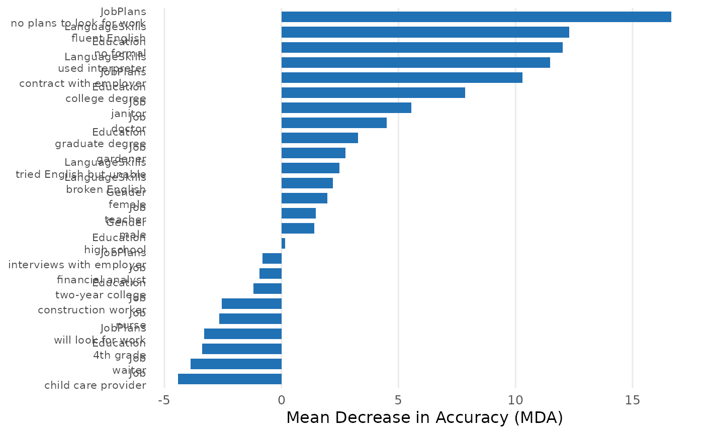
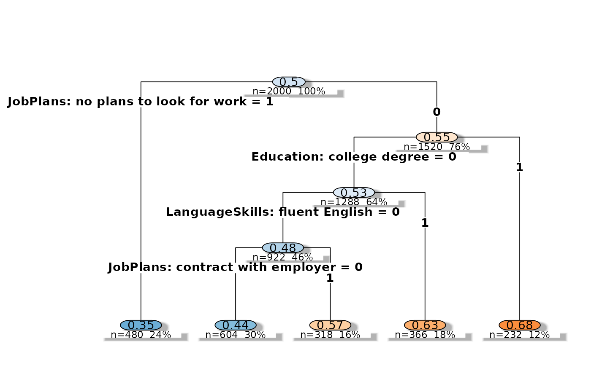

Fits a random forest or decision tree model to conjoint data. Use
resolution = "levels" (default) for level-specific analysis where each
attribute level becomes a separate binary predictor, or
resolution = "attributes" for attribute-level analysis where original
factor columns are passed directly to the model.
Usage
cj_fit(
formula,
data,
method = c("forest", "tree", "crt", "nmm", "marginal_r2"),
resolution = c("levels", "attributes"),
ntree = 500L,
cp = 0.005,
lambda_grid = c(1, 2, 3, 5, 7, 10, 15, 20, 25, 30, 40, 50, 75, 100, 150, 200, 300, 400,
500),
n_folds = 5L,
n_perm = 20L,
tol = 0.001,
resp_id = NULL,
n_boot = 0L,
seed = 42L,
...
)Arguments
- formula
A formula of the form
choice ~ attr1 + attr2 + ...where the outcome is binary (0/1 or a 2-level factor) and predictors are categorical attributes (converted to factors internally).- data
A data frame containing the conjoint data.
- method
Model type:
"forest"(default),"tree","crt","nmm", or"marginal_r2".- resolution
Analysis resolution:
"levels"(default) for level-specific dummy-coded analysis, or"attributes"for attribute-level analysis using original factors.- ntree
Number of trees for random forest (default 500). Ignored when
method = "tree".- cp
Complexity parameter for decision tree (default 0.005). Ignored when
method = "forest".- lambda_grid
Numeric vector of lambda values for CRT regularization path (default
c(1, 2, 3, 5, 7, 10, 15, 20, 25, 30, 40, 50, 75, 100, 150, 200, 300, 400, 500)). Ignored whenmethodis not"crt".- n_folds
Number of cross-validation folds for CRT (default 5). Ignored when
methodis not"crt".- n_perm
Number of permutation rounds for CRT importance (default 20). Ignored when
methodis not"crt".- tol
Convergence tolerance for HierNet (default 1e-3). Ignored when
methodis not"crt".- resp_id
Character string naming the respondent ID column. Required when
method = "nmm"or"marginal_r2". Ignored for other methods.- n_boot
Number of bootstrap iterations for NMM confidence intervals (default 0 = no bootstrap). Ignored when
methodis not"nmm".- seed
Random seed for reproducibility (default 42).
- ...
Additional arguments passed to
randomForest::randomForest()orrpart::rpart().
Value
An S3 object inheriting from cjdiag_fit, with subclass depending
on method (e.g., cjdiag_forest, cjdiag_tree, etc.). All objects
support print(), plot(), summary(), and importance().
Methods
"forest"(Random Forest)Which attribute levels matter most for choices? Measures how much each attribute level matters by shuffling its values and checking how much worse predictions get (Mean Decrease in Accuracy). Also tracks which level appears first across hundreds of trees (root node rate) — a proxy for which cue respondents check first. Returns class-specific importance (class_0, class_1) showing whether a level matters more for rejection or selection. Supports both level and attribute resolution.
"tree"(Decision Tree)How do respondents structure their decisions? Fits a single classification tree that reveals the hierarchical structure of choices — which attribute acts as the gatekeeper, which attributes matter only conditionally, and how many attributes are needed to explain most choices. Supports both resolutions.
"crt"(CRT/HierNet)Which attribute levels survive a strict signal-vs-noise test? Applies increasing amounts of statistical penalty to strip away weak signals (Bien and Tibshirani 2014). Levels that keep their effect even under heavy penalization carry signal; levels that vanish quickly are noise or redundant. Levels only.
"nmm"(Nested Marginal Means)In what order do attributes settle choices? Works through attributes one at a time, starting with the most decisive (Dill, Howlett and Mueller-Crepon 2024). At each step, identifies the attribute level that most strongly tips choices away from 50/50, removes tasks where that level cannot discriminate, and repeats. Requires
resp_id. Levels only."marginal_r2"(Marginal R-squared)Which attributes did each respondent actually use? For each individual respondent, measures how well each attribute alone explains their choices (Jenke, Bansak, Hainmueller and Hangartner 2021). Respondents with zero explanatory power for an attribute likely ignored it entirely. Requires
resp_id.
Examples
# \donttest{
data(immig)
rf <- cj_fit(Chosen_Immigrant ~ Gender + Education + LanguageSkills +
Job + JobPlans, data = immig, method = "forest")
print(rf)
#> Conjoint Random Forest
#> ======================
#>
#> Resolution: levels
#> Trees: 500
#> OOB Error: 42.2%
#> Observations: 2,000
#> Attributes: 5
#> Levels: 28
#>
#> Top 10 levels by MDA:
#>
#> # A tibble: 10 × 7
#> rank attribute level mda root_pct class_0 class_1
#> <int> <chr> <chr> <dbl> <dbl> <dbl> <dbl>
#> 1 1 JobPlans no plans to look for work 16.7 17.4 14.1 7.69
#> 2 2 LanguageSkills fluent English 12.3 11.2 5.68 10.8
#> 3 3 Education no formal 12.0 8.8 14.0 1.96
#> 4 4 LanguageSkills used interpreter 11.5 8.4 9.62 5.42
#> 5 5 JobPlans contract with employer 10.3 13.2 2.23 11.2
#> 6 6 Education college degree 7.84 9 3.91 6.30
#> 7 7 Job janitor 5.55 6.8 4.53 2.78
#> 8 8 Job doctor 4.50 3.6 2.09 3.85
#> 9 9 Education graduate degree 3.27 2 0.983 3.24
#> 10 10 Job gardener 2.74 0.6 3.86 -0.152
plot(rf)

summary(rf)
#> Conjoint Random Forest Summary
#> 500 trees, OOB error 42.2%, 2,000 obs, 28 levels
#> Top-1 MDA: 16.7 (30% of total)
#> Top-3 MDA: 41.0 (74% of total)
#> Root split: no plans to look for work (17.4%)
tr <- cj_fit(Chosen_Immigrant ~ Gender + Education + LanguageSkills +
Job + JobPlans, data = immig, method = "tree")
plot(tr)

# }